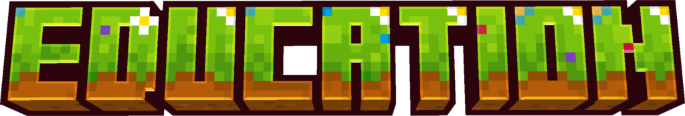
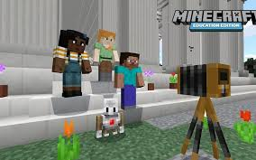
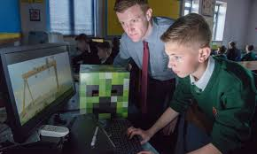
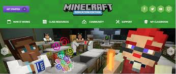
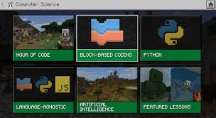
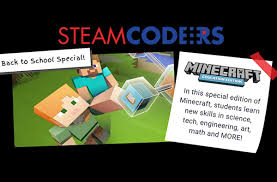
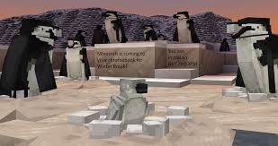

Why Minecraft: Education Edition Was Created
Minecraft: Education Edition was developed to help students learn in an engaging, interactive way. By transforming the familiar Minecraft world into a classroom, educators can teach subjects like coding, history, and STEM through hands-on exploration. The goal was to foster creativity, teamwork, and problem-solving skills, making learning fun and accessible for students worldwide.
STEM Learning
Minecraft: Education Edition makes STEM subjects engaging by allowing students to experiment with Redstone circuits, understand physics concepts, and even code using block-based programming or Python.
Creativity & Architecture
Through Minecraft’s building mechanics, students develop spatial awareness, design skills, and architectural creativity.
Teamwork & Collaboration
Minecraft fosters teamwork as students collaborate on class projects, build historical landmarks, and solve in-game challenges together.
History & Geography
Recreate historical events and explore accurate world geography using Minecraft’s immersive environments.
Problem-Solving & Logic
Puzzles, Redstone engineering, and coding challenges develop critical thinking skills and logical reasoning.
Environmental Awareness
Minecraft teaches players about sustainability and biodiversity through interactive maps like “Sustainable City.”

Minecraft Education Edition in the classroom allows students to learn through interactive experiences, enhancing creativity and engagement.

Students actively engage with Minecraft to develop problem-solving skills, collaborate, and apply their knowledge in real-world scenarios.

STEM projects come to life in Minecraft Education Edition, helping students understand key concepts such as coding, engineering, and physics.

Students recreate historical landmarks and events in Minecraft, experiencing history firsthand while learning about cultures and geography.

Collaboration in Minecraft Education Edition fosters teamwork, helping students develop leadership and communication skills while solving challenges together.

Through projects like renewable energy cities, Minecraft Education Edition introduces students to concepts of environmental sustainability and eco-friendly practices.